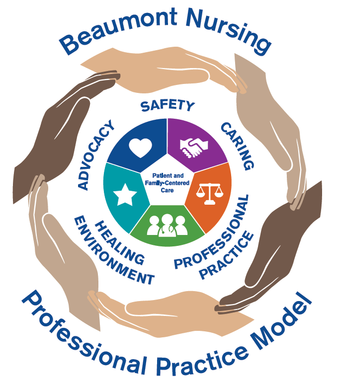

OO8
Organizational Overview 8
Exemplary Professional Practice
A schematic of the professional practice model(s) and a description of the care delivery system(s) in use in the organization.
Beaumont Health Nursing Professional Practice Model

EP1, Beaumont Health Nursing Professional Practice Model
Professional Practice Model
The Beaumont Health Professional Practice Model represents nursing practice at all eight Beaumont Health hospitals, including Beaumont Grosse Pointe (BGP). This model was developed in late 2016 and is being rolled out in first quarter 2017.
Care Delivery System
A care delivery system delineates nurses’ authority and accountability for clinical decision making and outcomes. At BGP, patients and families are encouraged to be actively involved in the care delivery system. Multidisciplinary teams implement patient-specific plans of care that are as unique as the patient and families.
The care delivery system used at BGP is primary nursing with a multidisciplinary team approach that combines patient and family centered care and communication with the healthcare team to bring about positive health outcomes.
Patient and Family Centered Care
The overall theme of the care provided at BGP is Patient and Family Centered Care. BGP supports a collaborative environment for patients, their families and their partners in care during hospitalization by encouraging and supporting the presence and participation of persons who play a significant role in the patient’s physical and emotional care.
BGP invites, encourages and embraces families and partners in care as valued members of the healthcare team, across the continuum of care. While supporting the presence of families and partners in care in the hospital setting, BGP also honors the presence of families and partners in care in its ambulatory centers, home healthcare, rehab centers and all areas.
The key concepts of Patient and Family Centered Care are:
- Dignity and Respect
- Information Sharing
- Participation
- Collaboration
Examples of how clinical nurses support Patient and Family Centered Care include:
- Encouraging family presence, including children and partners in care
- Overnight stays
- Cultural considerations
- End of life considerations
- Family presence during resuscitation/codes
Care Delivery System and Professional Practice Model
Clinical nurses, patients and families are partners in the care that is provided. Clinical nurses encourage patients and families to actively participate in their care decisions, and they:
- Coordinate patient care during their shift
- Develop a caring relationship with patients and families
- Partner with patients to create an individualized plan of care
- Follow best practices to achieve positive outcomes
- Use problem solving and critical thinking to provide the best Healing Environment
- Collaborate and consult with the healthcare team to provide quality patient care
- Use safety measures to promote a safe environment
- Advocate and communicate patient needs
- Acknowledge cultural and religious diversity
- Promote ethical decision making
- Use the nursing process to meet patient care needs
- Live the Beaumont Values of Compassion, Respect, Integrity, Teamwork and Excellence